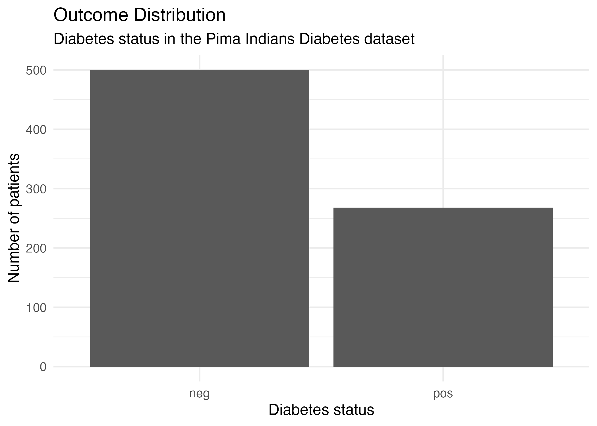
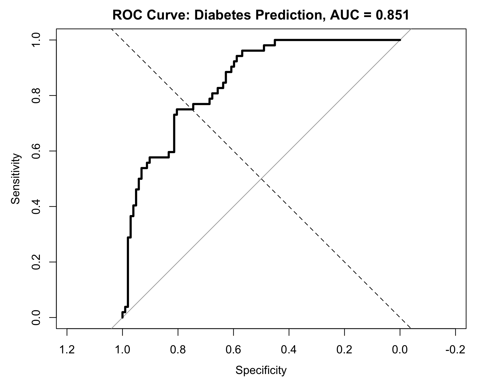

Case study overview
What this case study is about
This case study applies logistic regression to a diabetes risk prediction problem. The aim is not only to fit a model, but to think like a medical statistician: define the prediction question, understand the outcome, examine predictors, evaluate performance and interpret the results in clinical context.
Core message
The model has useful discrimination, but at threshold 0.50 it is more specific than sensitive. This makes it relatively conservative and potentially unsuitable as a screening model without threshold reconsideration.
Results first
What happened in this run?
Strong point
The model ranks patients reasonably well by diabetes risk. The ROC AUC of 0.851 suggests useful discrimination in this test split.
Main concern
At the default 0.50 threshold, sensitivity is only 0.577. For screening, this may miss too many diabetes-positive patients.
Clinical question
Can we predict whether a patient has diabetes?
The clinical question is:
Can we predict whether a patient has diabetes using routinely measured clinical characteristics?
This is a binary classification problem because the outcome has two categories: diabetes positive and diabetes negative. In a real clinical setting, a model like this could support screening or risk stratification, but this example is educational and should not be treated as a deployable clinical tool.
Dataset
Pima Indians Diabetes dataset
The case study uses the Pima Indians Diabetes teaching dataset. The outcome is diabetes status. The positive class is diabetes positive.
Predictors
| Predictor | Clinical interpretation |
|---|---|
| Pregnancies | Number of pregnancies |
| Glucose | Plasma glucose concentration |
| Blood pressure | Diastolic blood pressure |
| Triceps | Skinfold thickness |
| Insulin | Serum insulin |
| BMI / mass | Body mass index |
| Pedigree | Diabetes pedigree function |
| Age | Age in years |
Prediction time point
For this teaching example, the prediction time point is the time of clinical assessment. Predictors should be available at that moment. Future information would create data leakage.
Analysis workflow
From data to clinical interpretation
Load data
Import and prepare the diabetes dataset.
Define outcome
Set diabetes positive as the event.
Split data
Use training data for fitting and test data for evaluation.
Fit model
Fit logistic regression on training data.
Odds ratios
Interpret coefficients and uncertainty cautiously.
Predict risk
Generate predicted probabilities in the test set.
Classify
Convert probabilities into classes using thresholds.
Evaluate
Assess confusion matrix, AUC and Brier score.
Calibrate
Compare predicted risk with observed risk.
Thresholds
Compare clinical behaviour at different thresholds.
Limitations
Explain what could go wrong.
Report
Write conclusions carefully.
Step 1
Outcome distribution
Before fitting a model, we examine the outcome distribution. If one outcome class is much more common, accuracy can become misleading.
Diabetes outcome distribution

Model and odds ratios
Logistic regression model
The data are split into 80% training and 20% testing. The logistic regression model estimates the probability of diabetes positive status given the clinical predictors.
Model summary with odds ratios
| Predictor | Estimate | p-value | Odds ratio | 95% CI for OR | Interpretation |
|---|---|---|---|---|---|
| Pregnancies | 0.118 | 0.000939 | 1.13 | 1.05 to 1.21 | Higher pregnancies associated with higher predicted odds. |
| Glucose | 0.0353 | < 0.001 | 1.04 | 1.03 to 1.04 | Higher glucose associated with higher predicted odds. |
| Blood pressure | -0.0131 | 0.0223 | 0.987 | 0.976 to 0.998 | Slight negative association in this fitted model. |
| Triceps | -0.000959 | 0.899 | 0.999 | 0.984 to 1.01 | Little evidence of independent contribution here. |
| Insulin | -0.000909 | 0.356 | 0.999 | 0.997 to 1.00 | Little evidence of independent contribution here. |
| BMI / mass | 0.0861 | < 0.001 | 1.09 | 1.05 to 1.13 | Higher BMI associated with higher predicted odds. |
| Pedigree | 0.781 | 0.0150 | 2.18 | 1.16 to 4.10 | Higher pedigree score associated with higher predicted odds. |
| Age | 0.0152 | 0.139 | 1.02 | 0.995 to 1.04 | Weak evidence of independent age effect in this split. |
Statistical interpretation
Glucose, BMI, pregnancies and pedigree show clearer evidence of association in this fitted model. Blood pressure has a small negative coefficient in this run. Triceps, insulin and age show weaker evidence after adjustment for the other predictors. These are model associations, not causal claims.
Classification at threshold 0.50
Predicted probabilities and classification results
Predicted probabilities are converted into predicted classes using a threshold. We begin with threshold 0.50:
Predicted probability < 0.50 → diabetes negative
Confusion matrix
| Actual negative | Actual positive | |
|---|---|---|
| Predicted negative | 92 | 22 |
| Predicted positive | 10 | 30 |
Clinical interpretation
At threshold 0.50, the model correctly identifies 92 of 102 diabetes-negative patients, but only 30 of 52 diabetes-positive patients. This gives high specificity but modest sensitivity.
For screening, this sensitivity may be too low because 22 diabetes-positive patients are missed.
ROC and AUC
The model has useful discrimination
The ROC curve shows the trade-off between sensitivity and specificity across thresholds. AUC measures discrimination: whether the model tends to assign higher predicted risks to patients with diabetes than to patients without diabetes.
ROC curve for diabetes prediction

Interpretation
The model is reasonably good at ranking patients by diabetes risk. However, AUC does not tell us whether predicted probabilities are accurate, and it does not choose the clinical threshold.
Calibration
Brier score and calibration plot
Calibration assesses whether predicted probabilities agree with observed risks. The Brier score summarises the average squared difference between predicted probabilities and observed outcomes.
Calibration plot for diabetes prediction

| Risk group | Mean predicted risk | Observed risk | n | Interpretation |
|---|---|---|---|---|
| 1 | 0.0266 | 0.000 | 16 | Very low observed risk. |
| 2 | 0.0745 | 0.000 | 16 | Very low observed risk. |
| 3 | 0.124 | 0.0625 | 16 | Close but slightly overestimated. |
| 4 | 0.179 | 0.188 | 16 | Close to calibrated. |
| 5 | 0.235 | 0.400 | 15 | Observed risk higher than predicted. |
| 6 | 0.323 | 0.200 | 15 | Observed risk lower than predicted. |
| 7 | 0.409 | 0.600 | 15 | Observed risk higher than predicted. |
| 8 | 0.531 | 0.400 | 15 | Observed risk lower than predicted. |
| 9 | 0.707 | 0.733 | 15 | Close to calibrated. |
| 10 | 0.858 | 0.867 | 15 | Close to calibrated. |
Calibration interpretation
Calibration is fairly reasonable at the lowest and highest risk ranges, but less stable in the middle. This means the predicted probabilities should be interpreted cautiously, especially for patients with intermediate predicted risk.
Threshold interpretation
Changing the threshold changes clinical behaviour
A threshold converts predicted probabilities into predicted classes. The threshold should be chosen based on the clinical purpose, not automatically set to 0.50.
Interactive threshold comparison
Move the slider to see how threshold choice changes accuracy, sensitivity and specificity.
| Threshold | Accuracy | Sensitivity | Specificity | Clinical behaviour |
|---|---|---|---|---|
| 0.20 | 0.701 | 0.962 | 0.569 | Very sensitive; many false positives. |
| 0.30 | 0.714 | 0.788 | 0.676 | More screening-focused. |
| 0.40 | 0.766 | 0.673 | 0.814 | More balanced. |
| 0.50 | 0.792 | 0.577 | 0.902 | Conservative; misses more positives. |
| 0.60 | 0.786 | 0.481 | 0.941 | Highly specific. |
| 0.70 | 0.773 | 0.404 | 0.961 | Very conservative; many positives missed. |
Clinical interpretation
Lower thresholds detect more diabetes-positive patients but create more false positives. Higher thresholds reduce false positives but miss more diabetes-positive patients. For screening, a threshold below 0.50 may be more appropriate, but this would require clinical justification.
Critical appraisal
What could go wrong?
1. Accuracy can be misleading
Accuracy is 0.792 at threshold 0.50, but sensitivity is only 0.577. Accuracy hides the number of diabetes-positive patients missed.
2. Threshold may not match purpose
For screening, threshold 0.50 may be too conservative. Thresholds should reflect clinical consequences.
3. Generalisation is uncertain
Performance in one teaching dataset does not guarantee performance in another population or healthcare setting.
4. Calibration may be unstable
Middle-risk calibration groups deviate from the diagonal, so predicted probabilities should be interpreted cautiously.
5. Associations are not causal effects
Odds ratios describe associations in this fitted model. They do not prove that changing a predictor would change risk.
6. Dataset is educational
The Pima dataset is useful for teaching, but it should not be treated as a modern deployable clinical dataset.
Before real-world use
A diabetes risk model would require:
- careful data quality assessment;
- clinically justified predictor selection;
- internal validation;
- external validation;
- calibration assessment;
- threshold selection based on clinical consequences;
- decision curve analysis;
- fairness and subgroup performance checks;
- transparent reporting.
Reflection questions
Check your understanding
Questions
- What is the outcome in this case study?
- What is the positive class?
- Which predictors had clearer evidence of association in the fitted model?
- Why is accuracy alone not enough?
- Why is sensitivity important for screening?
- Why might specificity matter in clinical follow-up?
- What does ROC AUC measure?
- What does the Brier score measure?
- What does calibration measure?
- Why might threshold 0.50 not be appropriate for screening?
- Why might a model work poorly in a new population?
- What additional validation would be needed before clinical use?
Show suggested answers
The outcome is diabetes status, with diabetes positive as the event. Glucose, BMI, pregnancies and pedigree showed clearer evidence of association in this fitted model. Accuracy alone is not enough because it hides the balance between missed positive cases and false positives. A screening model usually needs high sensitivity. ROC AUC measures discrimination, Brier score measures probability prediction error, and calibration measures agreement between predicted and observed risk. Threshold 0.50 may be too conservative for screening. External validation would be needed before clinical use.
Related course material
Code and figures
Reproducible R workflow
The R code for this case study is:
r/C1_diabetes_risk_prediction_case_study.R
After running the script from the course folder, the figures should be saved in:
figures/
Expected output files:
- figures/diabetes_outcome_distribution.png
- figures/diabetes_roc_curve.png
- figures/diabetes_calibration_plot.png
Download R script Back to case studies
This logistic regression model has useful discrimination in the test set, with AUC 0.851. However, the default 0.50 threshold gives sensitivity 0.577 and specificity 0.902, meaning the model is conservative and misses some diabetes-positive patients. The case study shows why medical prediction models must be interpreted using discrimination, calibration, threshold-specific metrics and clinical context rather than accuracy alone.